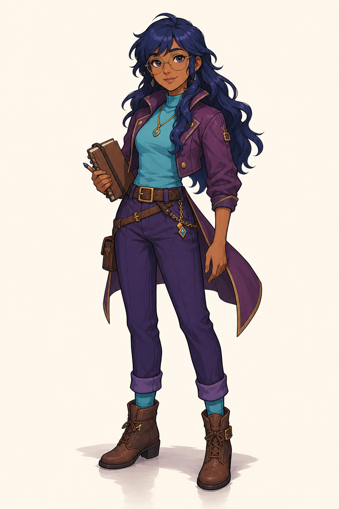
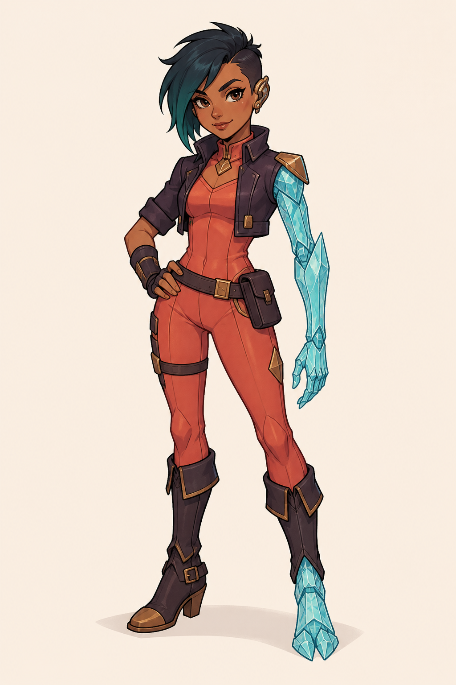
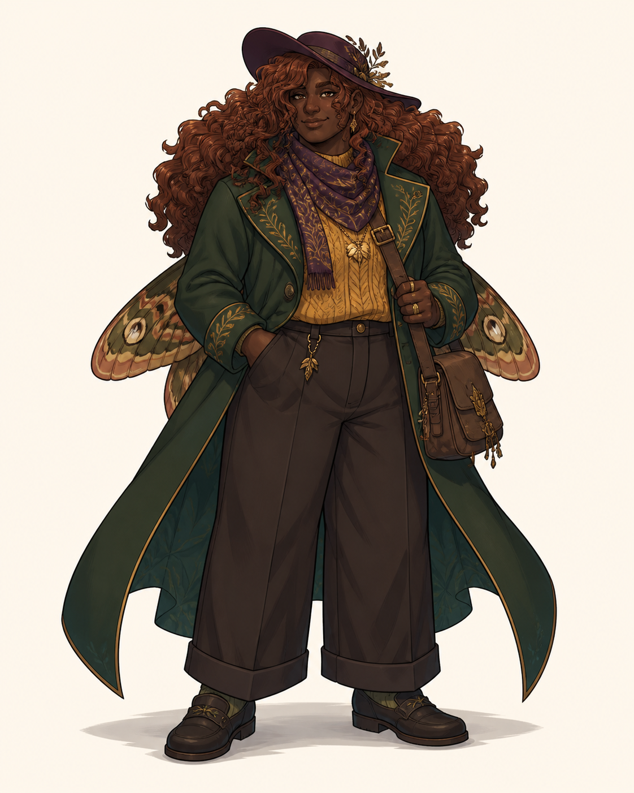
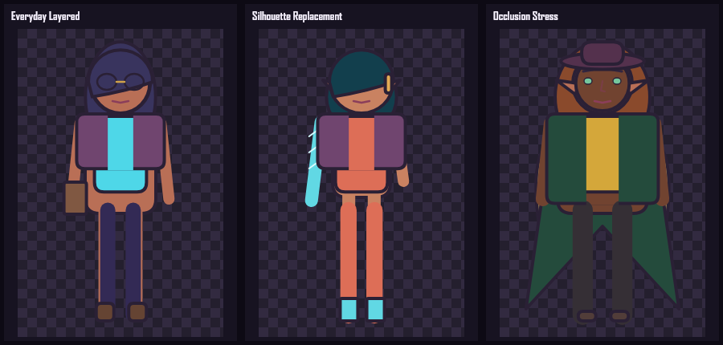
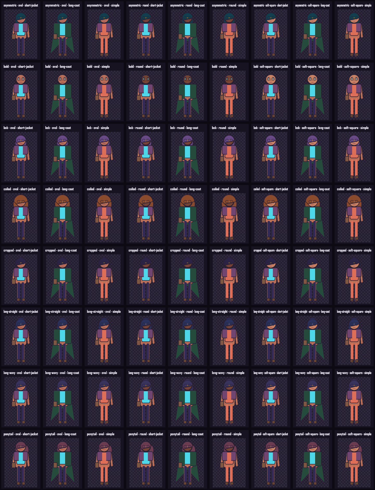
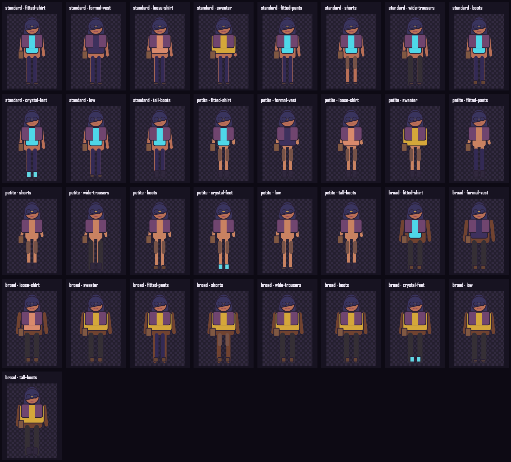
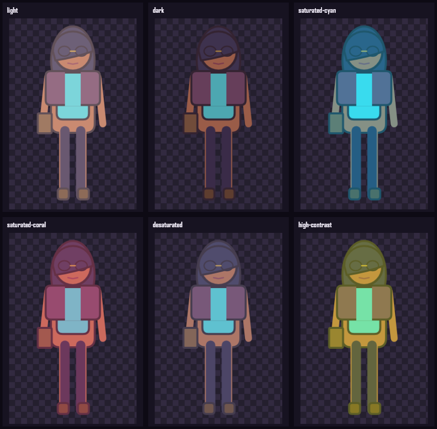
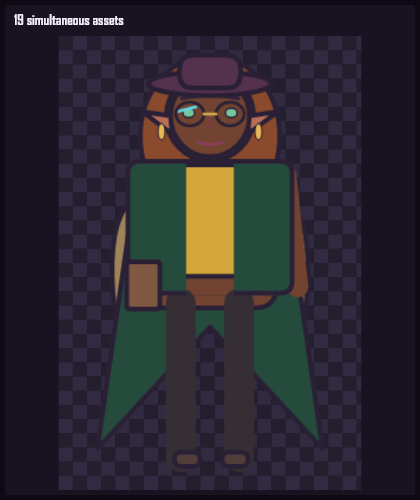

TASK-007 · Starter asset pack
A small pack
with real range.
Sixty-two deterministic assets share one line, shape, palette, and shading system while stressing multi-plane hair, replacements, body fits, suppression, dependencies, conflicts, and animation.
Art-direction anchors
Reference intent
Generated references establish the aspiration; executable assets below are transparent, deterministic Canvas fragments.

Silhouette Replacement

Occlusion Stress
Executable hero bar
Three silhouettes, one system

Hero 01 · Everyday Layered
Expressions, turnaround, motion
{kind=link}
{kind=link}
{kind=link}
Hero 02 · Silhouette Replacement
Asymmetry without mirroring
{kind=link}
{kind=link}
{kind=link}
Hero 03 · Occlusion Stress
Back mass, coat tails, hat, wings
{kind=link}
{kind=link}
{kind=link}
Combination galleries
Pairwise, fit, palette, adversarial
Every hair × head × outer layer
{kind=link}

Every body × top, bottom, and shoe
{kind=link}

Palette extremes
{kind=link}

Maximum simultaneous fragments
{kind=link}

Human checkpoint
What decides acceptance
- The three heroes are aesthetically appealing and recognizably different.
- Linework, shading, proportions, and palette feel like one art direction.
- No untriaged seam, halo, occlusion, or ground-contact defects remain.
- Hair, outerwear, replacement anatomy, hats, wings, and asymmetric items layer coherently.
- Palette extremes preserve readable contrast and intentional highlights.
- The pack demonstrates meaningful flexibility rather than superficial recolors.